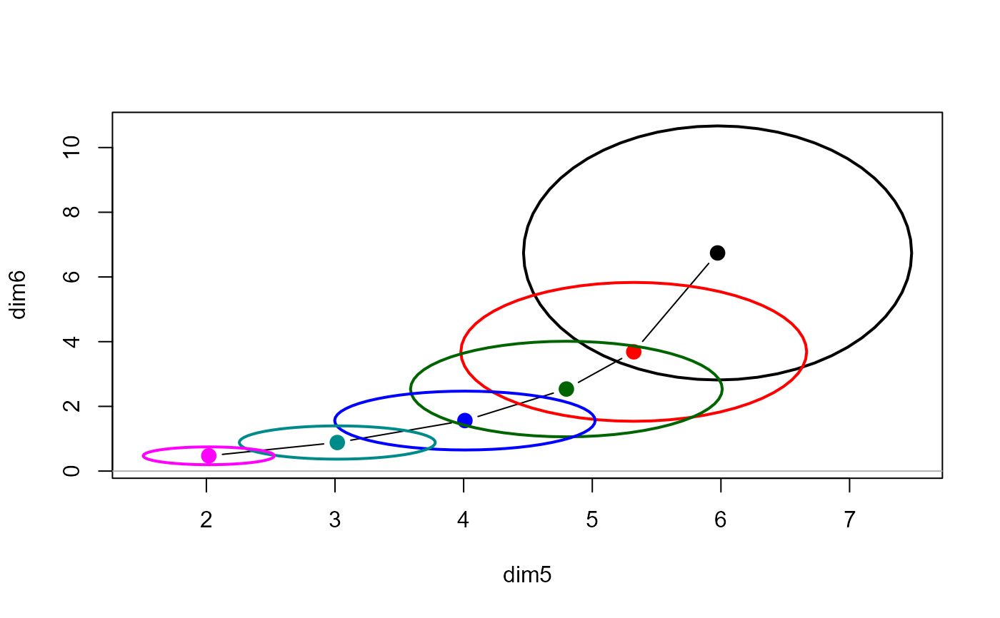

The function pca.ridge transforms a ridge object from
parameter space, where the estimated coefficients are \(\beta_k\) with
covariance matrices \(\Sigma_k\), to the principal component space defined
by the right singular vectors, \(V\), of the singular value decomposition
of the scaled predictor matrix, \(X\).
In this space, the transformed coefficients are \(V \beta_k\), with covariance matrices $$V \Sigma_k V^T$$.
This transformation provides alternative views of ridge estimates in low-rank approximations. In particular, it allows one to see where the effects of collinearity typically reside — in the smallest PCA dimensions.
Arguments
- x
A
ridgeobject, as fit byridge- ...
Other arguments passed down. Not presently used in this implementation.
Value
An object of class c("ridge", "pcaridge"), with the same
components as the original ridge object.
References
Friendly, M. (2013). The Generalized Ridge Trace Plot: Visualizing Bias and Precision. Journal of Computational and Graphical Statistics, 22(1), 50-68, doi:10.1080/10618600.2012.681237, https://www.datavis.ca/papers/genridge-jcgs.pdf
Examples
longley.y <- longley[, "Employed"]
longley.X <- data.matrix(longley[, c(2:6,1)])
lambda <- c(0, 0.005, 0.01, 0.02, 0.04, 0.08)
lridge <- ridge(longley.y, longley.X, lambda=lambda)
plridge <- pca(lridge)
traceplot(plridge)
pairs(plridge)
# view in space of smallest singular values
plot(plridge, variables=5:6)
